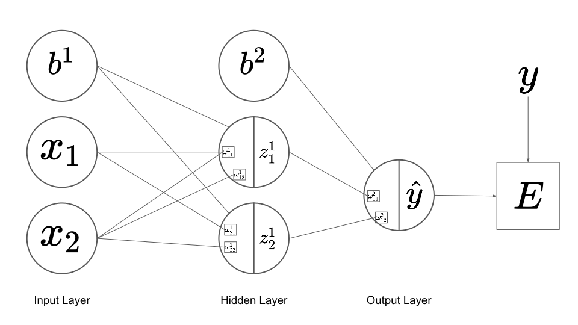
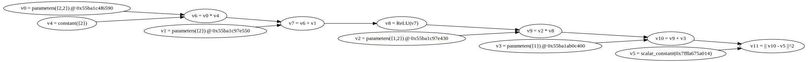
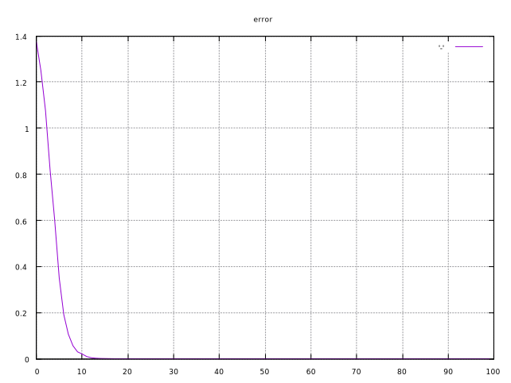
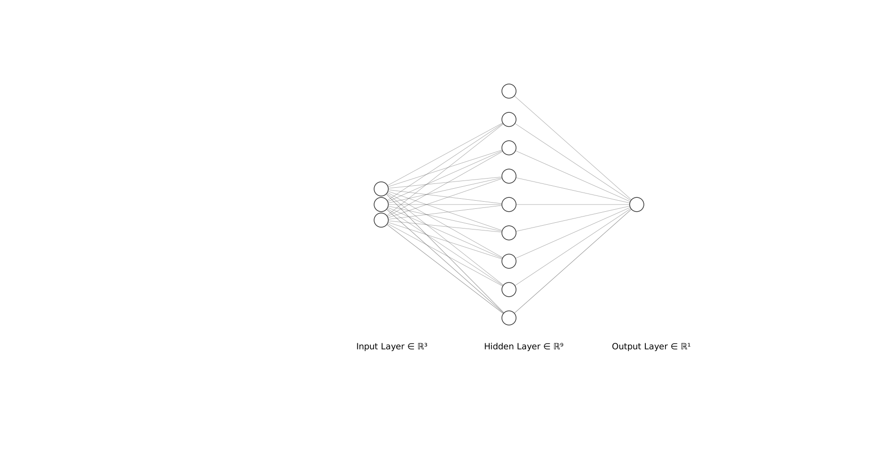

XOR
論理ゲート
A----++++
++++++-----Z
B----++++
AND(論理積）
論理式: Z = AB
| A | B | Z |
|---|---|---|
| 0 | 0 | 0 |
| 0 | 1 | 0 |
| 1 | 0 | 0 |
| 1 | 1 | 1 |
OR（論理和）
論理式: Z = A+B
| A | B | Z |
|---|---|---|
| 0 | 0 | 0 |
| 0 | 1 | 1 |
| 1 | 0 | 1 |
| 1 | 1 | 1 |
NOT（論理否定）
A-----+++++----Z
| A | Z |
|---|---|
| 0 | 1 |
| 1 | 0 |
NAND (NOT of AND)
全てが１のときのみ０
| A | B | Z |
|---|---|---|
| 0 | 0 | 1 |
| 0 | 1 | 1 |
| 1 | 0 | 1 |
| 1 | 1 | 0 |
XOR(eXclusive OR:排他的論理和）
不一致和（A != Bのとき１）
| A | B | Z |
|---|---|---|
| 0 | 0 | 0 |
| 0 | 1 | 1 |
| 1 | 0 | 1 |
| 1 | 1 | 0 |
Deeplearningから見たXOR
適当な入力ベクトルxを入れると，それが1か0かを判定するネットワークを作成する．
トレーニングデータ
Computation Graph
実際にやってみるXOR
１．隠れ層のノード数が３つのバージョン（単純）
1.1 計算式
下記のような計算グラフを構築してXORを解いてみる． 
また，各変数の定義は下記のとおりです．
Note
計算グラフの表現と線形代数的な表現の違いに注意しましょう． 例えば，計算グラフではバイアス\boldsymbol{b^1}は１つのノードですが， 線形代数の表現においては要素数２のベクトルです． dynetでは線形代数的な表現を用いてグラフを構築していきます．
Note
重み行列は行列です．したがって\boldsymbol{W^{(2)}}は行列になります． 要素数が２つしかないとは言え行列ですので，横長の形になります．\boldsymbol{W^{(2)}}を要素数２のベクトルだと勘違いすると， 縦長の形を想像し，\boldsymbol{W^{(2)}z^{(1)}}の計算がうまく行かなくなります.
この内，
\boldsymbol{W^1},
\boldsymbol{W^2},
\boldsymbol{b^1},そして
\boldsymbol{b^2}
はdynetでいうParameterであり学習によって獲得されます．
計算式は下記のようになります．
1.2 実装の前に手で解いてみる
dynetに計算させる前に，自分でXOR問題をこのネットワークが解けるかどうか 試してみましょう．まず，下記のようにそれぞれ値が与えられたとします．
すると，
よってy = \hat{y}となり，少なくとも\boldsymbol{x}=(0,1)^Tにおいては 学習が可能なことが示された．ちなみに，\boldsymbol{x}が他の場合においても やってみるとうまく行くことがわかる．
1.3 実装
おまたせしました．dynetで実装してみましょう．
注意することが１つあります．我々はこれからニューラルネットをプログラムで表現 するのではなく，計算グラフを表現するということです．つまり層を積んでいくのではなく 線形代数を利用したプログラムを作る感覚です．
今回は下記のような計算グラフを実装します．

#include <iostream>
#include <vector>
#include <dynet/training.h>
#include <dynet/expr.h>
#include <dynet/model.h>
#include <gpop/Series.hpp>
int main(int argc, char* argv[])
{
// dynetの初期化
dynet::initialize(argc, argv);
// 設定
const int ITERATIONS = 30;
const int HIDDEN_L1_SIZE = 2;
// 計算グラフを構築
dynet::ParameterCollection model;
dynet::SimpleSGDTrainer trainer(model);
// パラメータを設定 (パラメータ = 最適化される変数）
// W1 (2x2) のパラメータを作成
dynet::Parameter p_W1 = model.add_parameters({HIDDEN_L1_SIZE, 2});
// b1 (2x1) のパラメータを作成
dynet::Parameter p_b1 = model.add_parameters({HIDDEN_L1_SIZE});
// W2 (1x2) のパラメータを作成
dynet::Parameter p_W2 = model.add_parameters({1, HIDDEN_L1_SIZE});
// b2 (1x1) のパラメータを作成
dynet::Parameter p_b2 = model.add_parameters({1});
// ノードの作成と計算グラフへの登録
dynet::ComputationGraph cg;
dynet::Expression W1 = dynet::parameter(cg, p_W1);
dynet::Expression b1 = dynet::parameter(cg, p_b1);
dynet::Expression W2 = dynet::parameter(cg, p_W2);
dynet::Expression b2 = dynet::parameter(cg, p_b2);
// ニューラルネット及び，計算グラフへの入力変数x_valueを宣言し，変更可能にするために参照渡しをします．
std::vector<dynet::real> x_value(2);
dynet::Expression x = dynet::input(cg, {2}, &x_value);
// ニューラルネット及び，計算グラフへの入力変数y_valueを宣言し，変更可能にするために参照渡しをします．
dynet::real y_value;
dynet::Expression y = dynet::input(cg, &y_value);
// 計算グラフにノードの接続関係を宣言する．
dynet::Expression z1 = dynet::rectify(W1*x+b1);
dynet::Expression y_pred = W2*z1+b2;
dynet::Expression loss_expr = dynet::squared_distance(y_pred, y);
// 構築した計算グラフを描いてみる．それが僕には楽しかったから
cg.print_graphviz();
// 誤差を記録する
std::vector<double> loss_vec;
// 教師データを作成し，学習させてみる
for (int iter = 0; iter < ITERATIONS; iter++) {
double loss_value = 0;
for (int mi = 0; mi < 4; mi++) {
//教師データの作成開始(x,y)
bool x1 = mi%2;
bool x2 = (mi / 2)%2;
std::cout << "x1 : x2 " << std::boolalpha << x1 << "\t" << x2 << std::endl;
x_value[0] = x1 ? 1 : -1;
x_value[1] = x2 ? 1 : -1;
std::cout << "x_value[0] : " << x_value[0] << "\t" << "x_value[1] : " << x_value[1] << std::endl;
y_value = (x1 != x2) ? 1 : -1;
//教師データの作成終了(x,y)
//学習実行
loss_value += dynet::as_scalar(cg.forward(loss_expr));
cg.backward(loss_expr);
trainer.update();
}
loss_value /= 4;
std::cout << "E = " << loss_value << std::endl;
loss_vec.push_back(loss_value);
}
// 誤差をプロットする
Series plot("error");
plot.plot(loss_vec);
plot.show();
std::cin.get();
// 結果を確かめる
x_value[0] = -1;
x_value[1] = -1;
cg.forward(loss_expr);
std::cout << "[-1,-1] -1 : " << dynet::as_scalar(y_pred.value()) << std::endl;
x_value[0] = -1;
x_value[1] = 1;
cg.forward(loss_expr);
std::cout << "[-1,1] 1 : " << dynet::as_scalar(y_pred.value()) << std::endl;
x_value[0] = 1;
x_value[1] = -1;
cg.forward(loss_expr);
std::cout << "[1,-1] 1 : " << dynet::as_scalar(y_pred.value()) << std::endl;
x_value[0] = 1;
x_value[1] = 1;
cg.forward(loss_expr);
std::cout << "[1,1] -1 : " << dynet::as_scalar(y_pred.value()) << std::endl;
return 0;
}
1.4 結果
うまく行くと，誤差は下記の図のように小さくなっていきます．

しかしながら，これはかなりうまくいった結果です．このようにならなくても 心配しないでください．このニューラルネットはとても小さいのでうまく学習できるかどうかは 初期ランダムシードに依存します．数回実行してみてください．
2．隠れ層のノード数が8つのバージョン（公式）

Note
プログラムの全体像
Note
モデルの式
#include "dynet/training.h"
#include "dynet/expr.h"
#include "dynet/io.h"
#include "dynet/model.h"
#include <fstream>
using namespace std;
using namespace dynet;
int main(int argc, char** argv) {
dynet::initialize(argc, argv);
const unsigned ITERATIONS = 30;
// ParameterCollection (all the model parameters)
ParameterCollection m;
SimpleSGDTrainer trainer(m);
//MomentumSGDTrainer trainer(m);
Parameter p_W, p_b, p_V, p_a;
const unsigned HIDDEN_SIZE = 3;
p_W = m.add_parameters({HIDDEN_SIZE, 2});
p_b = m.add_parameters({HIDDEN_SIZE});
p_V = m.add_parameters({1, HIDDEN_SIZE});
p_a = m.add_parameters({1});
// train the parameters
for (unsigned iter = 0; iter < ITERATIONS; ++iter) {
ComputationGraph cg;
Expression W = parameter(cg, p_W);
Expression b = parameter(cg, p_b);
Expression V = parameter(cg, p_V);
Expression a = parameter(cg, p_a);
vector<Expression> losses;
for (unsigned mi = 0; mi < 4; ++mi) {
bool x1 = mi % 2;
bool x2 = (mi / 2) % 2;
vector<dynet::real> x_values(2);
x_values[0] = x1 ? 1 : -1;
x_values[1] = x2 ? 1 : -1;
float y_value = (x1 != x2) ? 1 : -1;
Expression x = input(cg, {2}, x_values);
Expression y = input(cg, y_value);
//Expression h = tanh(W*x + b);
Expression h = tanh(affine_transform({b, W, x}));
//Expression h = softsign(W*x + b);
Expression y_pred = affine_transform({a, V, h});
losses.push_back(squared_distance(y_pred, y));
}
Expression loss_expr = sum(losses);
// Print the graph, just for fun.
if(iter == 0) {
cg.print_graphviz();
}
// Calculate the loss. Batching will automatically be done here.
float loss = as_scalar(cg.forward(loss_expr)) / 4;
cg.backward(loss_expr);
trainer.update();
cerr << "E = " << loss << endl;
}
}
Todo
referenceを調べて，各関数の説明を付け加える
include
#include <dynet/training.h>
#include <dynet/expr.h>
#include <iostream>
#include <fstream>
namespace
using namespace std;
using namespace dynet;
initialize
dynet::initialize(argc, argv);
parameter setting1
全ての重みパラメータwが登録されているParameterCollectionwを作成する．
そして，その重みパラメータを更新するためのSGDTrainerを作成し，
SGDTrainerにParameterCollectionを渡す．
const unsigned ITERATIONS = 30;
ParameterCollection m;
SimpleSGDTrainer trainer(m);
parameter setting
Prameter p_W, p_b, p_V, p_a;
const unsigned HIDDEN_SIZE = 3;
p_W = m.add_parameters({HIDDEN_SIZE, 2});
p_b = m.add_parameters({HIDDEN_SIZE});
p_V = m.add_parameters({1, HIDDEN_SIZE});
p_a = m.add_parameters({1});
train the parameters
dynetのトレーニングフェーズはfor文で回します．
for (unsigned inter = 0 iter < ITERATIONS; ++iter) {
ComputationGraph cg;
Expression W = parameter(cg, p_W);
Expression b = parameter(cg, p_b);
Expression V = parameter(cg, p_V);
Expression a = parameter(cg, p_a);
vector<Expression> losses;
}
教師データ作成
三項演算子
[?:文]は条件分岐処理の１つで，条件が真か偽により処理を分岐します． [if文]を短縮して書いたような記述方法になります．
条件式 ? 真の場合の文 : 偽の場合の文
注意点としては条件の分岐結果が変数やリテラルなどの値になっていなければ ならないことです．よく代入演算子と一緒に利用されます．
bool variable = (result) ? true : false;
for (unsigned mi = 0; mi < 4; ++mi) {
// 入力ベクトルを作成
bool x1 = mi % 2; // 0 -> false, 1 -> true, 2 -> false, 3 -> true 偶奇判定
bool x2 = (mi / 2) % 2; // 0 -> false, 1 -> false, 2 -> true, 3 -> true
vector<dynet::real> x_values(2); // dynet::realはfloatと同等
x_value[0] = x1 ? 1 : -1;
x_value[1] = x2 ? 1 : -1;
float y_value = (x1 != x2) ? 1 : -1;
XORを[0,1]ではなく[-1,1]であわらしていると思われる．４イテレーション全部を 計算すると下記の表のようになる．
| (indecs)mi | x_value[0] | x_value[1] | y_value |
|---|---|---|---|
| 0 | -1 | -1 | -1 |
| 1 | 1 | -1 | 1 |
| 2 | -1 | 1 | 1 |
| 3 | 1 | 1 | -1 |
| A | B | Z |
|---|---|---|
| 0 | 0 | 0 |
| 0 | 1 | 1 |
| 1 | 0 | 1 |
| 1 | 1 | 0 |
expression
Expression x = input(cg, {2}, x_values);
Expression y = input(cg, y_value);